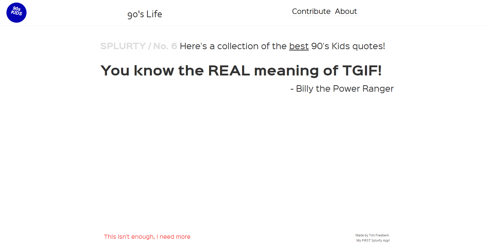
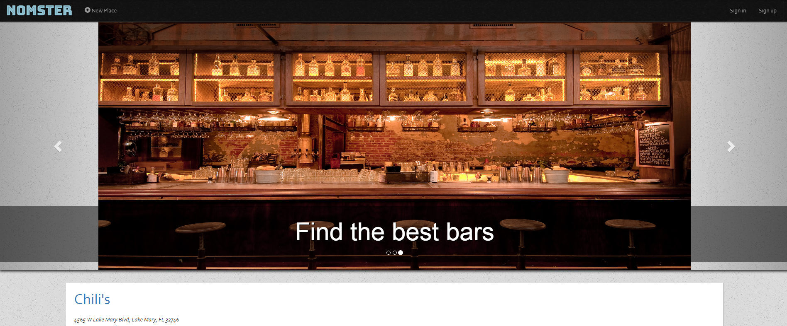
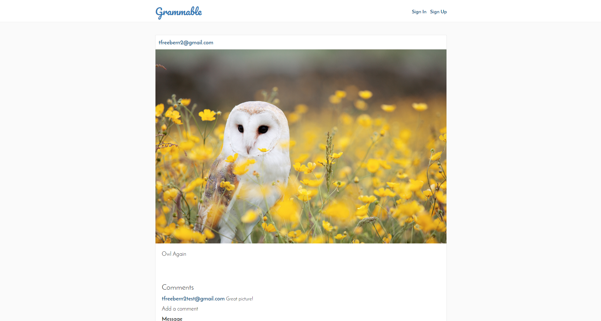

Tim Freebern II
Web Developer
I am a full-stack web developer with experience using Ruby on Rails to develop web applications and services. I've always loved technology and especially computers. Growing up I learned how to tinker with my very own built PCs and troubleshoot issues as they cropped up. I’m seeking a role as a web developer at a company where I can learn, grow, and continue to master the craft. Everyday brings a new challenge that I look forward to conquering.
Code Snipppets
Luhn Algorithm
This ruby program solves the problem of verifying if a credit card
number is valid. I tested this program using TDD and the rspec testing gem.
module Luhn
def self.is_valid?(number)
split_up = number.to_s.split("").map(&:to_i)
split_up.reverse!
split_up.map!.each_with_index{|x, index| index.odd? ? x * 2 : x}
split_up.map!.each_with_index{|x, index| (index.odd? && x >= 10) ? x - 9 : x }
sum = split_up.inject(:+)
return (sum % 10 == 0) ? true : false
end
end
puts "Give me a number:"
number = gets.chomp.to_i
def list(number)
order = number % 10
if number == 0
return "Please choose an actual number."
elsif number > 10 && number < 14
return "th"
elsif order == 1
return "st"
elsif order == 2
return "nd"
elsif order == 3
return "rd"
else
return "th"
end
end
puts "This is the #{number}#{list(number)} on the list!"
Ordinal Challenge
This ruby program will convert a plain number
to the ordinal of the number. So for example,
if the user enters 2, it will display 2nd, if
the user enters 3, it will display 3rd, etc.
Foobar
This ruby program is an adaptation of a classic technical
interview problem which displays sequences
of the Foobar pattern.
puts "Let's play a game called Foobar!"
puts "How many numbers do you want me to output?"
num = gets.chomp.to_i
n = 0
while n < num
n = n + 1
if n % 3 == 0 && n % 5 == 0
puts "Foobar"
elsif n % 3 == 0
puts "Foo"
elsif n % 5 == 0
puts "Bar"
else
puts "#{n}"
end
end
Web Apps
Quote Generator

A database-powered quote generator with a mobile-first
design, using the Ruby on Rails framework, HTML, and CSS.
Uses Git and GitHub for version control, and launched
on Heroku.
Yelp Clone

A Yelp clone that integrates with the Google Maps API
and includes features like user comments, star ratings,
image uploading, and user authentication.
Two-Sided Market Place

A two-sided, video-streaming marketplace platform that
features credit card payment capabilities, user role
management, complex user interfaces, and advanced
database relationships.
Test Driven Development

An Instagram clone that was built using industry-standard, test-driven
development following numerous red/green/refactor cycles.
Single Page Todo Application

This single-page to-do application features a
fluid user interface that– by using JavaScript–
allows users to rapidly add dynamic content.
Agile Team Project

Worked on an Agile software development team building
a chess application. Under the guidance of a senior software engineer,
we had weekly Agile team meetings for code reviews, sprint planning,
and feature assignments.
Tim has developed proficiency and expertise
in the following programming languages and
comfort with the following tools.